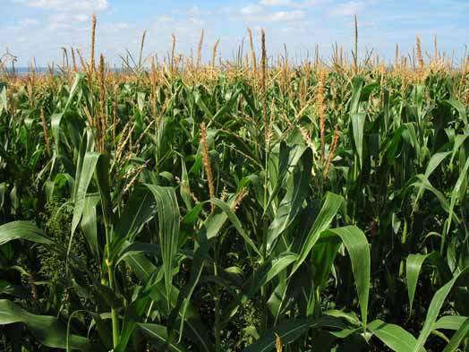
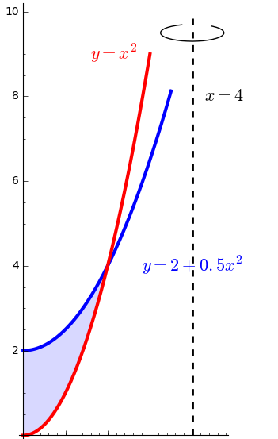
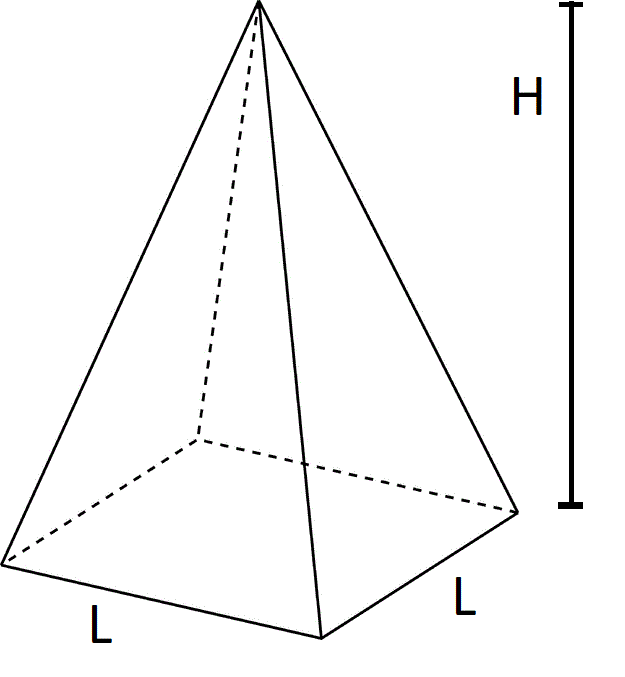

Find the volume of the solid created by rotating the region between \(y = 2x\) and \(y = x^2\) about the \(x\)-axis.
Sketch a figure of the situation
determine which direction you should slice
what slices look like
find the endpoints of integration
set up the integral
evaluate
Find the volume of the solid created by rotating the region enclosed by \(y=e^x, y=0, x=0\), and \(x=1\) about the \(y\)-axis.
Example 1 - Corn growing degree days

The development rate of many organisms shows an approximately linear dependence on
temperature. Biologists measure the development of such organisms in terms of "degree-days."
These accumulate over time at a rate equal to the difference between the current temperature and
a threshold temperature \(T_m\). This temperature varies among species, as does the total number of
degree-days required for full development.
Corn is a plant species where development is measured in degree-days. The threshold temperature for most varieties of corn grown in the US is 50 degrees F.
The yield and number of degree-days varies greatly for different varieties of corn and often leads to colloquial names for different varieties, e.g. 85-day corn, 110-day corn, etc.
You can see a running total of the accumulated degree-days for the year at the Wisconsin Corn Growers Association page. More information about growing degree-days (GDD) for corn can be found here and here.
Sketch a figure that shows the graphs of the temperature \(T(t)\) and threshold temperature \(T_m\) as functions of time \(t\).
Construct an integral to represent the total number of degree-days in \(t_1\) days. This integral
represents a function \(F(t_1)\) that contains the parameter \(T_m\) and the temperature function \(T(t)\) in addition
to the independent variable \(t_1\).
Assume a variety of corn requires 2500 GDD to mature and has a threshold temperature of 50 degrees F. Calculate the total amount of time needed for development if the temperature is a constant 70 degrees F.
Suppose the temperature is a constant \(T\) degrees. Calculate the corresponding development time. Sketch a plot of the development time as a function of \(T\).
Assume that corn accumulates GDD if the temperature is above 50 degrees F and this accumulation is limited by moisture stress if the tempurature rises above 86 degrees F. Thus if the temperature rises to 90 degrees F, we treat all degrees above 86 as equivalent to 86. Write a new integral describing the development of corn.
Suppose the temperature for 10 days in June is \( 60 + 10\sin 2 \pi t \), where \(t\) is measured in days. How many GDD has the corn accumulated? What if the temperature is \( 60 + 15\sin 2 \pi t \)?
The formula for the number of GDD accumulated in a day used by many is
\begin{equation*}
GDD = \frac{T_{max} + T_{min}}{2} - T_m.
\end{equation*}
In this equation if the max temperature is above 86, it is replaced with 86. If the min temperature is below 50, we replace it with 50.
Describe what is going on with this equation. How does your calculation in part (e) compare?
Is this related to any numerical integration formulas we have encounterd thus far? Why or why not?
Example 2 - Table legs
Imagine you are working for the Mathematical Furniture Factory Company, who design mathematically inspired furniture.
Today you are making table legs on a lathe from 3 foot long dowels of pine with a 2 inch radius.
The table legs are made by cutting a function, \(r(x)\), that represents the radius along the length of the dowel.
Draw a diagram of the scenario.
What is the restriction on the function \(r(x)\) that needs to be in place to ensure the leg is not cut into several pieces?
It is important for shipping purposes to know the weight of each individual table leg.
Let \(x\) and \(f(x),g(x)\) be in units of inches. Assume pine wood has a uniform density of 30 lb/ft\(^3\). Set up an integral that measures how much a table leg weighs when it is cut into the function
\begin{equation*}f(x) = e^{0.01x}.\end{equation*} What is the shipping weight?
What about one cut into the function
\begin{equation*}g(x) = 1 + 0.5\cos \left( \frac{2\pi x}{36} \right)?\end{equation*}
Example 3 - Furniture feet
Imagine you are working for the Mathematical Furniture Factory Company, who design mathematically inspired furniture.
You are designing decorative feet for a dresser from a hemisphere with radius 1 cm made out of some alloy metal.
Suppose they wish to have a volume of exactly 1.5cm\(^3\) of this metal.
Set up an integral equation that can be used to determine how big of a hole would they have to bore through the center of the hemisphere to achieve this volume?
Example 4
Consider the region bounded by the curves \(y = 0.5 x^2 + 2, y = x^2\) and the \(y\)-axis.
What is the volume of the solid created by rotating this region around the line \(x=4\)?

Example 5
Consider the region bounded by the curves \(y = 2 - x^2\) and \(y = x^2\).
What is the volume of the solid created by rotating this region around the line \(x=1\)?
Sketch a figure of the situation including the axis of rotation.
Calculate the locations of any intersections.
Determine if you should use slicing (disks, washers, etc) or cylindrical shells. Be ready to justify your approach.
Set up an integral representing the volume.
Evaluate it.
Example 6 - Pyramids

Use the idea of slicing to set up and evaluate an integral that represents the volume of a square pyramid whose base has sides of length \(L\) and height \(H\).
Example 7 - Rocket
A rocket initially at rest relative to a spacestation is undergoing a docking manuver.
The rockets main engines provide a thrust (acceleration) of \(a(t) = \frac{t}{1 + t^2}\) over time \(t\) (in seconds).
The retrorockets provide a thrust in the opposite direction of \(a(t) = t/2\).
How long should the manuver last if the rocket is to be at rest again when the manuver is finished?
Set up an equation that can be used to determine this time. It will not be solvable algebraically. Use a numerical method or graph and visually estimate a time.
Consider the region bounded by the curves \(y = x + \frac{4}{x}\) and \(y = 5\).
What is the volume of the solid created by rotating this region around the line \(x=-1\)?
Sketch a figure of the situation including the axis of rotation.
Calculate the locations of any intersections.
Determine if you should use slicing (disks, washers, etc) or cylindrical shells. Be ready to justify your approach.